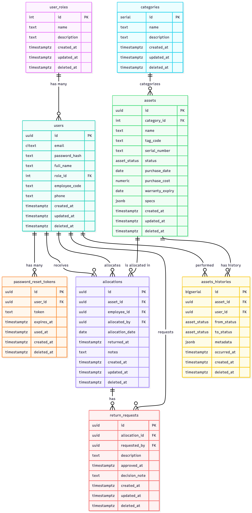

** Asset Allocation System — Database Schema Documentation**¶
1. Tables and Fields¶
1.1 user_roles¶
| Field | Type | Description |
|---|---|---|
| id | SERIAL PK | Role ID |
| name | TEXT UNIQUE | Role name (admin, employee, etc.) |
| description | TEXT | Description |
| created_at | TIMESTAMPTZ | Creation timestamp |
| updated_at | TIMESTAMPTZ | Last update timestamp |
| deleted_at | TIMESTAMPTZ | Soft delete timestamp |
1.2 users¶
| Field | Type | Description |
|---|---|---|
| id | UUID PK | User ID |
| CITEXT UNIQUE | Email address | |
| password_hash | TEXT | Hashed password |
| full_name | TEXT | Full name |
| role_id | INT FK(user_roles.id) | Foreign key to user role |
| employee_code | TEXT UNIQUE | Employee code |
| phone | TEXT | Phone number |
| created_at | TIMESTAMPTZ | Creation timestamp |
| updated_at | TIMESTAMPTZ | Last update timestamp |
| deleted_at | TIMESTAMPTZ | Soft delete timestamp |
Indexes
- idx_users_role on (role_id)
1.3 password_reset_tokens¶
| Field | Type | Description |
|---|---|---|
| id | UUID PK | Token ID |
| user_id | UUID FK(users.id) | Associated user |
| token | TEXT UNIQUE | Unique reset token |
| expires_at | TIMESTAMPTZ | Expiration time |
| used_at | TIMESTAMPTZ | When token was used |
| created_at | TIMESTAMPTZ | Creation timestamp |
| deleted_at | TIMESTAMPTZ | Soft delete timestamp |
Indexes
- idx_password_reset_user on (user_id)
1.4 categories¶
| Field | Type | Description |
|---|---|---|
| id | SERIAL PK | Category ID |
| name | TEXT UNIQUE | Category name |
| description | TEXT | Description |
| created_at | TIMESTAMPTZ | Creation timestamp |
| updated_at | TIMESTAMPTZ | Last update timestamp |
| deleted_at | TIMESTAMPTZ | Soft delete timestamp |
1.5 assets¶
| Field | Type | Description |
|---|---|---|
| id | UUID PK | Asset ID |
| category_id | INT FK(categories.id) | Category |
| name | TEXT | Asset name |
| tag_code | TEXT UNIQUE | Unique tag/code |
| serial_number | TEXT UNIQUE | Serial number |
| status | asset_status ENUM | Current asset status |
| purchase_date | DATE | Purchase date |
| purchase_cost | NUMERIC(12,2) | Purchase cost |
| warranty_expiry | DATE | Warranty expiry |
| specs | JSONB | JSON for specifications |
| created_at | TIMESTAMPTZ | Creation timestamp |
| updated_at | TIMESTAMPTZ | Last update timestamp |
| deleted_at | TIMESTAMPTZ | Soft delete timestamp |
Indexes
- idx_assets_category on (category_id)
- idx_assets_status on (status)
1.6 allocations¶
| Field | Type | Description |
|---|---|---|
| id | UUID PK | Allocation ID |
| asset_id | UUID FK(assets.id) | Allocated asset |
| employee_id | UUID FK(users.id) | Allocated to |
| allocated_by | UUID FK(users.id) | Allocated by |
| allocation_date | DATE | Date of allocation |
| returned_at | TIMESTAMPTZ | Date/time returned |
| notes | TEXT | Notes/comments |
| created_at | TIMESTAMPTZ | Creation timestamp |
| updated_at | TIMESTAMPTZ | Last update timestamp |
| deleted_at | TIMESTAMPTZ | Soft delete timestamp |
Indexes
- uq_open_allocation_per_asset (partial unique) on (asset_id) WHERE returned_at IS NULL
- idx_alloc_employee_open (partial) on (employee_id) WHERE returned_at IS NULL
1.7 return_requests¶
| Field | Type | Description |
|---|---|---|
| id | UUID PK | Return request ID |
| allocation_id | UUID FK(allocations.id) | Related allocation |
| requested_by | UUID FK(users.id) | User who requested return |
| description | TEXT | Description/details |
| approved_at | TIMESTAMPTZ | Approval timestamp (NULL = pending) |
| decision_note | TEXT | Admin note |
| created_at | TIMESTAMPTZ | Creation timestamp |
| updated_at | TIMESTAMPTZ | Last update timestamp |
| deleted_at | TIMESTAMPTZ | Soft delete timestamp |
Indexes
- idx_return_requests_pending (partial) WHERE approved_at IS NULL
- uq_open_return_request UNIQUE on (allocation_id)
1.8 assets_histories¶
| Field | Type | Description |
|---|---|---|
| id | BIGSERIAL PK | History ID |
| asset_id | UUID FK(assets.id) | Asset reference |
| user_id | UUID FK(users.id) | User who performed the action |
| from_status | asset_status ENUM | Previous asset status |
| to_status | asset_status ENUM | New asset status |
| metadata | JSONB | Additional details (reason, notes) |
| occurred_at | TIMESTAMPTZ | When event occurred |
| created_at | TIMESTAMPTZ | Record creation timestamp |
| deleted_at | TIMESTAMPTZ | Soft delete timestamp |
Indexes
- idx_assets_histories_asset_time on (asset_id, occurred_at DESC)
2. ER Diagram¶

3. Enum Definitions¶
Enum: asset_status¶
| Value | Description |
|---|---|
available |
Asset is ready for allocation |
assigned |
Asset is currently allocated |
under_repair |
Asset is under maintenance or repair |
damaged |
Asset is damaged or not usable |
Used in:
- assets.status
- assets_histories.from_status
- assets_histories.to_status
4 Triggers¶
set_updated_at()¶
Function behavior:
- Sets NEW.updated_at = now() on every update.
Applied On:
- Users
- assets
- categories
- allocations
- return_requests
Why: Ensures consistent automatic timestamping across all tables without backend code duplication.
5. Views¶
5.1 current_allocations¶
Shows all active (not returned) asset allocations, including asset & employee details.
Why: Simplifies dashboard queries for “who is holding what right now.”
5.2 asset_status_counts¶
Returns counts of assets grouped by their status.
Why: Used to populate overview statistics on the dashboard.
5.3 pending_return_requests¶
Lists all return requests where approved_at IS NULL.
Why: Powers the admin’s "Pending Approvals" screen with a single efficient query.